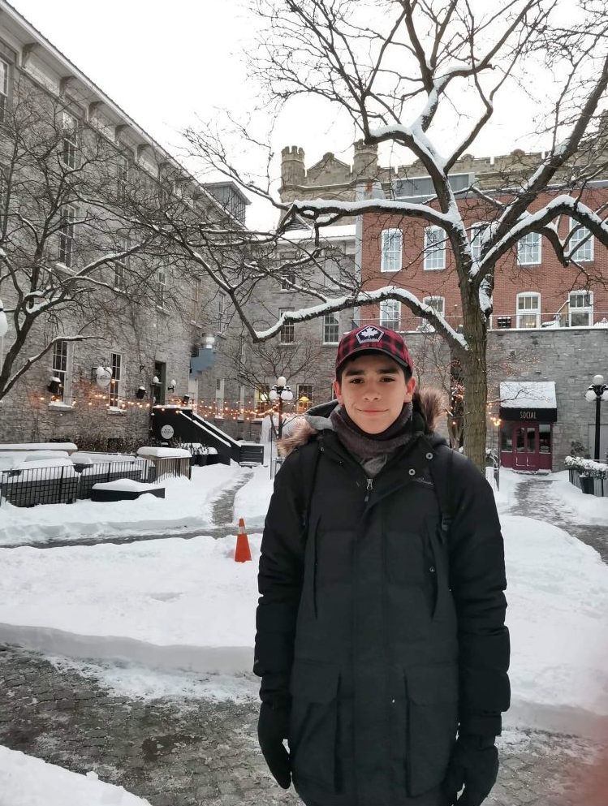
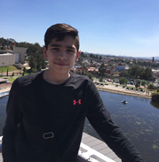
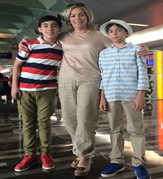
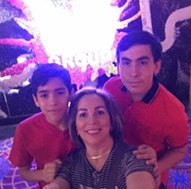
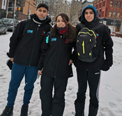
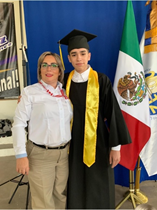
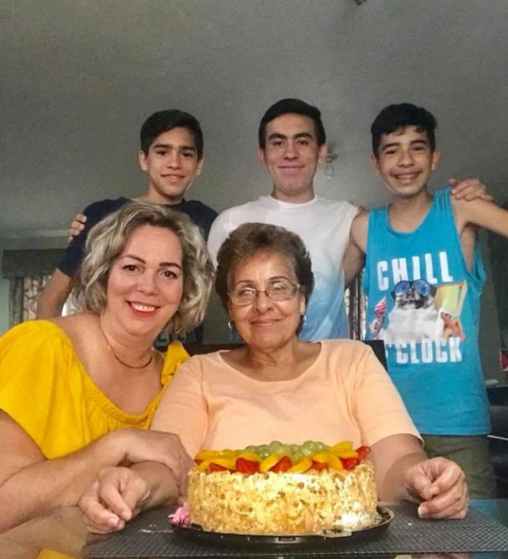
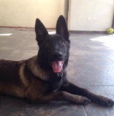
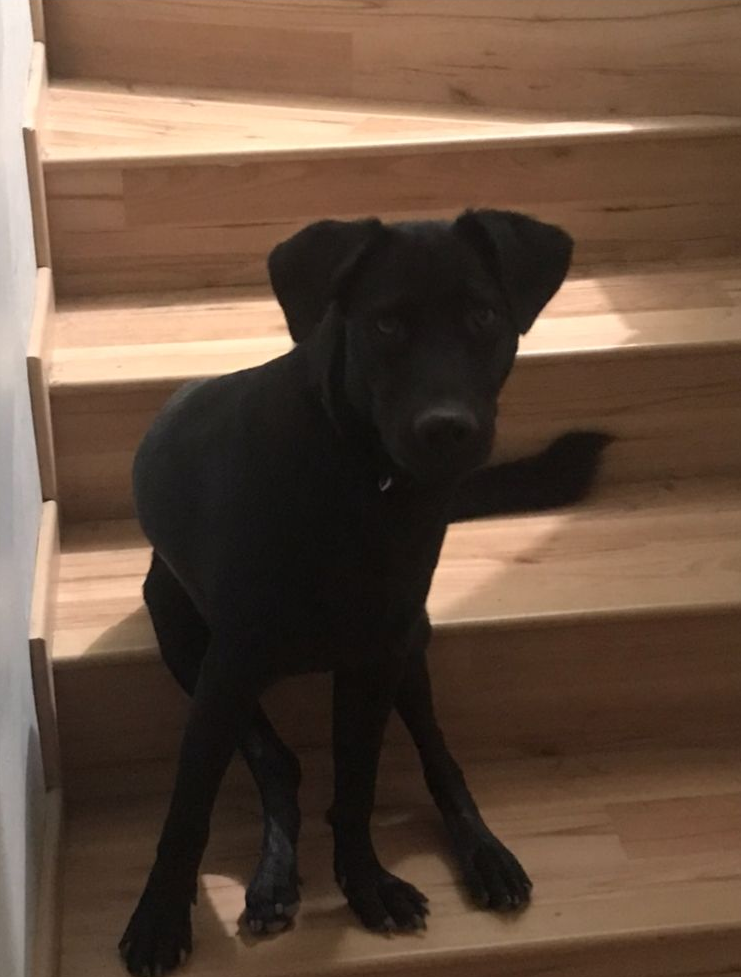
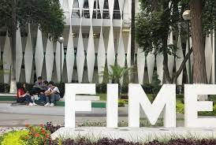

1.- Minibiografia Propia

Hola buenas tardes me llamo Emmanuel Enrique Larraga Bueno, naci el 17 de noviembre del 2003 en el Hospital central de Pemex en la ciudad de Cadereyta Jimenez del estado de Nuevo Leon,
actualmente vivo en la ciudad de cadereyta con mi mama y mi hermano, tengo 4 hermanos los cuales ordenando de mayor a menor estos serian sus nombres
Max (Mayor 18 años), Emmanuel (Yo tengo 17 años), Sebastian(Menor 17 años) y Milo (Menor 10 años), en unos dias respectivamente el 17 de noviembre cumplire mis 18 años y
ya sere oficialmente mayor de edad, aunque no halla tomado ni fumado nunca me emociona el simple hecho de ser mayor de edad. Me gusta mucho viajar, jugar videojuegos en mis tiempos libres,
hacer deporte jugando futbol, basquetball, ping pong o tenis, disfruto mucho leer libros, ya sean novelas, libros de terror, comics o mangas como spiderman, The boys, chainsaw man, invincible
batman, spawn etc, adeams que tambien me gusta mucho el jugar con mi perro Zakk.
Momentos que mas me han marcado en mi vida
  Mi viaje a puebla fue el primer viaje que realice por mi cuenta ya que este era un viaje de estudios de mi escuela y fue la primera experiencia de viaje por mi cuenta, al principio si daba miedo por el hecho que no viajaaraia con mis familiares, pero recorde que viajaria con amigos y eso me tranquilizo, haciendo mi viaje mas memorable para mi ya que al dia de hoy todavia lo recuerdo como de los mejores momentos que pase con mis amigos. Otro momento muy significativo seria mi viaje a Cancún ya que, fue un momento significativo e importante de mi vida que jamás olvidaré ya que en ese viaje tristemente falleció mi abuelo, esto fue durante el 3 er dia de nuestro viaje a cancun y fue tan repentino que al dia de hoy todavia sigo pensando en ellos y lo extraño bastante.
  Tambien puedo mencionar otro viaje que tuve que fue mi primer viaje a las vegas fue a mis 14 o 15 años y lo hice con mi hermano y mi mamá, gracias a ese viaje conocí otra parte de mi familia y logré convivir más haciéndome más social porque al principio yo era un poco tímido y no socializaba muy frecuentemente. Despues de ese viaje termine mi ultimo año de secundaria y me pude graduar asi pasando a la preparatoria, logre entrar a la preparatoria No.12 de Cadereyta Jimenez de la UANL, en mis 3 años de estudios logre hacer muchos amigos, la preparatoria es otro momento muy importante en mi vida, ya que en mi 4to semestre que era el ultimo realize el viaje mas costoso y largo que he hecho a la fecha.
Ademas que viaje por mi cuenta, ese fue mi viaje a Canada este viaje fua muy importante para mi porque logre aprender muchas cosas desde poder ser mas fluido con la converzacion en ingles tanto con las personas con las que logre socializar y lograr una amistad, ya que en el grupo que fuimos que eramos todos de mexico habian muchos mexicanos de otros estados y logre hacer amigos con algunos con los que sigo hablando al dia de hoy.
  Este momento fue demasiado importante en mi vida ya que esta fue mi graduación y salida de la preparatoria para dar inicio a mi siguiente etapa que es la universidad, ya que logre relizar mi examen de admision en linea y lograr entrar a la facultan de FIME en la UNIVERSIDAD AUTONOMA DE NUEVO LEON de monterrey por desgracia hasta el dia de hoy no he podido ir a clases presenciales que era de las cosas que mas me emocionaban antes de entrar, esto por la cuarentena que se provoco gracias al covid-18, que afecto mucho mi dia a dia al principio, pero al dia de hoy ya se normalizo mas cada vez menos personas gracias a la vacuna estan llevando menos cubrebocas y ya no faltara mucho para que me toquen mis clases en presencial alomejor el proximo año.
  Creo que este fue un momento al igual que mi viaje a cancun me afecto mucho y hasta el dia de hoy sigo pensando en ello, ese momento fue cuando mi primer perro y mejor amigo Gekko fallecio por una deformacion en su intestino que le causaba mucho dolor dia a dia y a causa de eso con mucha tristesa no queriamos que sufriera tuvimos que ponerlo a dormir yo y mi familia pasando sus ultimos momentos a su lado, este fue un momento muy triste y repentino para mi, porque todavia recuerdo que fue en una noche que estaba haciendo mi ultimo plano en AutoCad de una materia antes de salir de vacaciones y recibi repentinamente esa noticia, al dia de hoy estoy muy agradecido de poder haber pasado los ultimos momentos de mi mejor amigo Gekko a su lado.
Esto paso en noviembre del año pasado y al dia de hoy sigo pensando mucho en eso. Actualmente mi familia y yo tanemos otro perro que recibimos de regalo de unos tios que lo llamamos Zakk, todavia sigo pensando mucho en mi mejor amigo Gekko, pero siento menos tristeza al tener a Zakk cerca.
Mis estudios profesionales

Actualmente estoy estudiando en la UNIVERSIDAD AUTONOMA DE NUEVO LEON, en la facultad de FIME en monterrey estudiando la carrera de Ing. en Tecnologia de Software,
apenas cuando hiba a presentar mi examen de admision estudie por un lapso de 4 meses en los que me esforze mucho, para que al final el exxamen
fuera en linea y no viniera nada de lo que estudie y prepare por 4 meses :(, pero por suerte pude pasar a la facultad que queria entrar, ya que
me gusta la idea de ser ingeniero y me gusta la carrera que agarre ya que yo no soy una persona que prefiere el trabajo fisico, me gusta mas el
realizar tareas complicadas de la forma mas eficiente y como cada vez el mundo se esta convirtiendo y pasando a un formato digital, y a causa de eso
muchas compañias se estan actualizando y siendo mas abiertas a la programacion, eso fue lo que me ayudo a decidirme en elegir esta carrera.
Ademas que el desarrollo de software no es el unico camino que ofrece esta carrera, con el hecho de aprender a programar que esta carrera te lo enseña como base, tambien
me podria a dedicar a programar distintas cosas como videojuegos, aplicaciones tanto de pc como mobiles, desarrollo web etc. Son muchas las posibilidades que ofrece esta carrera
y si pienso aprovecharlas lo mas que pueda. Actualmente estoy a semanas de empezar los examenes finales de mi 3er semestre en linea, aunque las clases sean en linea y
por mucho prefiera las presenciales estoy haciendo lo mas que pueda para poder aprender lo mas que pueda en estas clases en linea, aunque sea cierto el hecho de que
es mucho mejores las clases en presencial tambien tienen sus lados buenos las clases en linea.